Side Window, 5D
Side Window, 5D
To remove
1. Open the door windows to avert the risk of the window being forced out should a car door be closed creating overpressure in the cabin.
2. Remove Rear side trim, 5D.
3. Remove the front moulding.
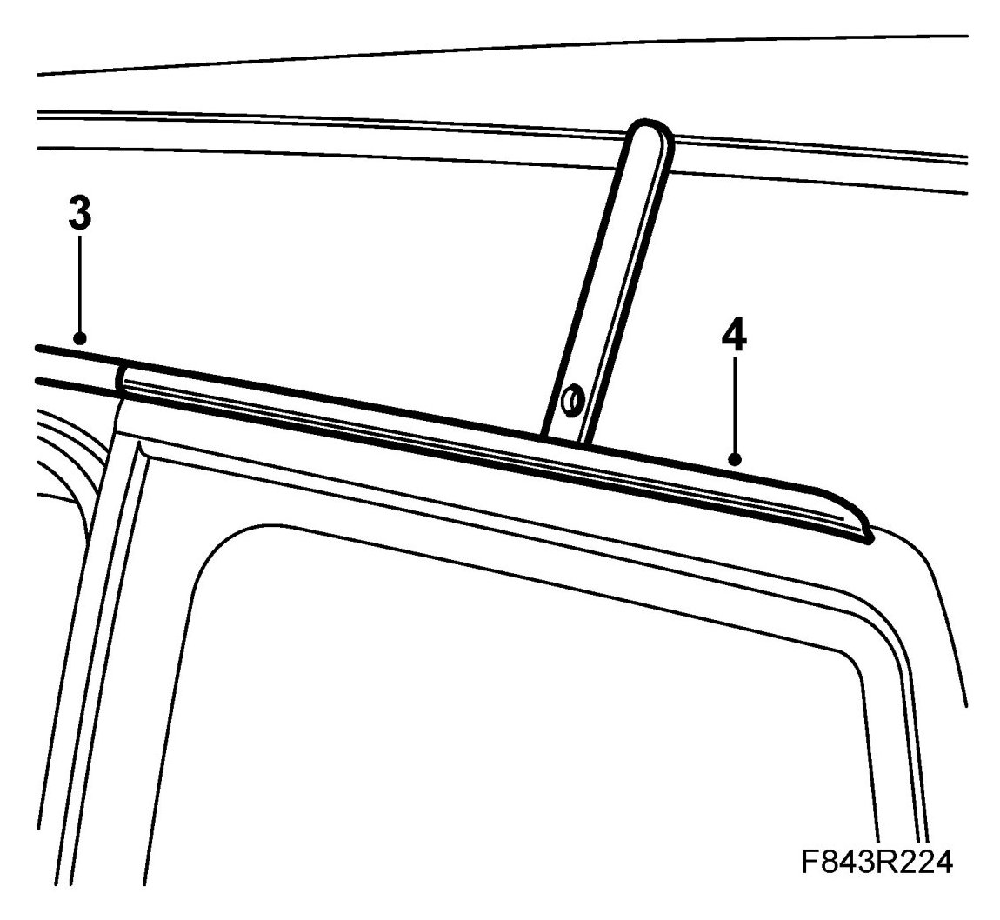
4. Remove the rear moulding.
5. When changing a bonded window, use 82 93 714 Kit, window removal tool. If the window is so damaged that it is not possible to affix the suction cups, use 30 14 099 Cutting wire handles and with the help of a colleague, saw out the window.
WARNING: Use the protective equipment that is supplied with the windscreen removal and adhesive kit, such as the goggles and protective gloves.
6. Measure out 2.5 m of cutting wire.
7. Insert the awl through the adhesive in the bottom corner inside the window.
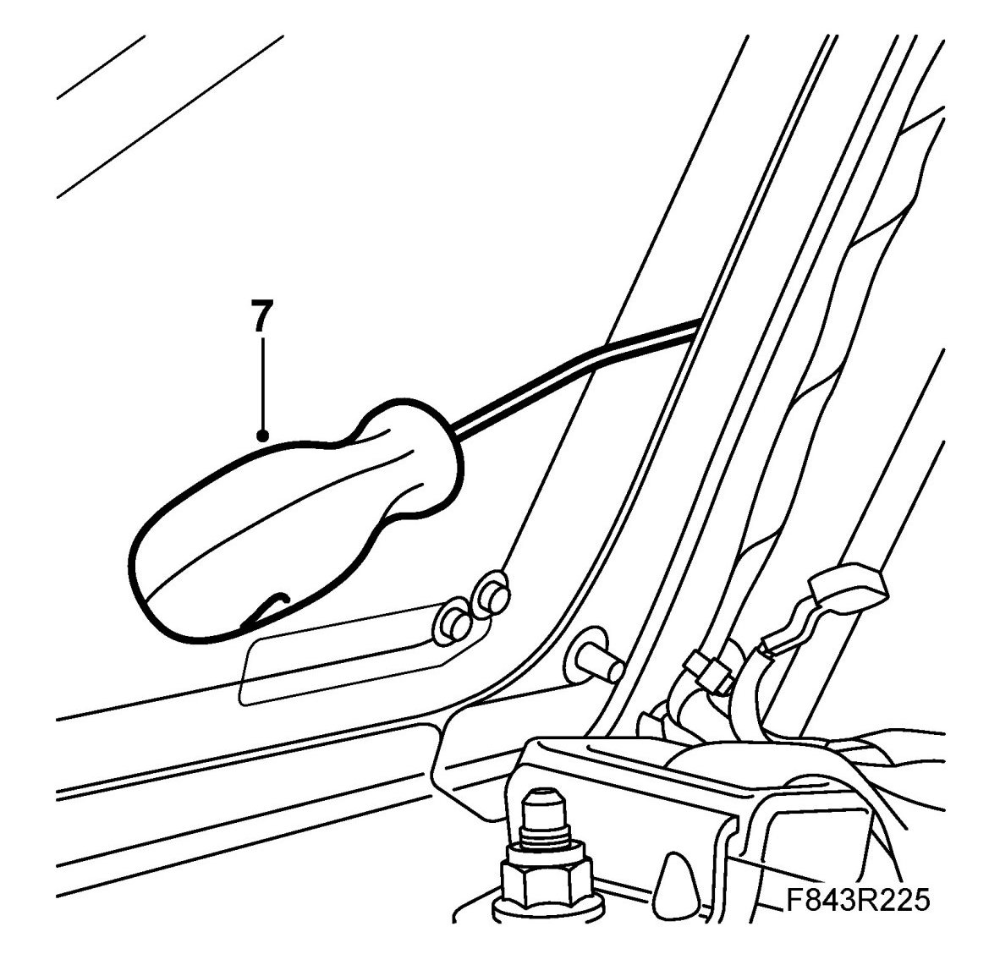
8. Hook on the ends of the wire to the screwdriver and bend the ends to stop them slipping.
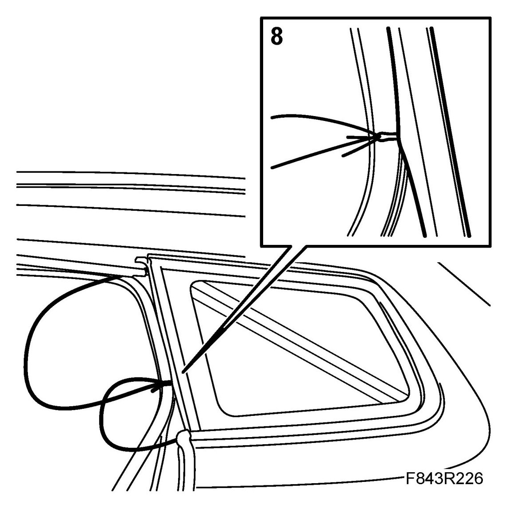
9. Position the wire under the moulding. Press it in with the help of the plastic tool provided with the kit. Make sure that the wire is lying around all the corners.
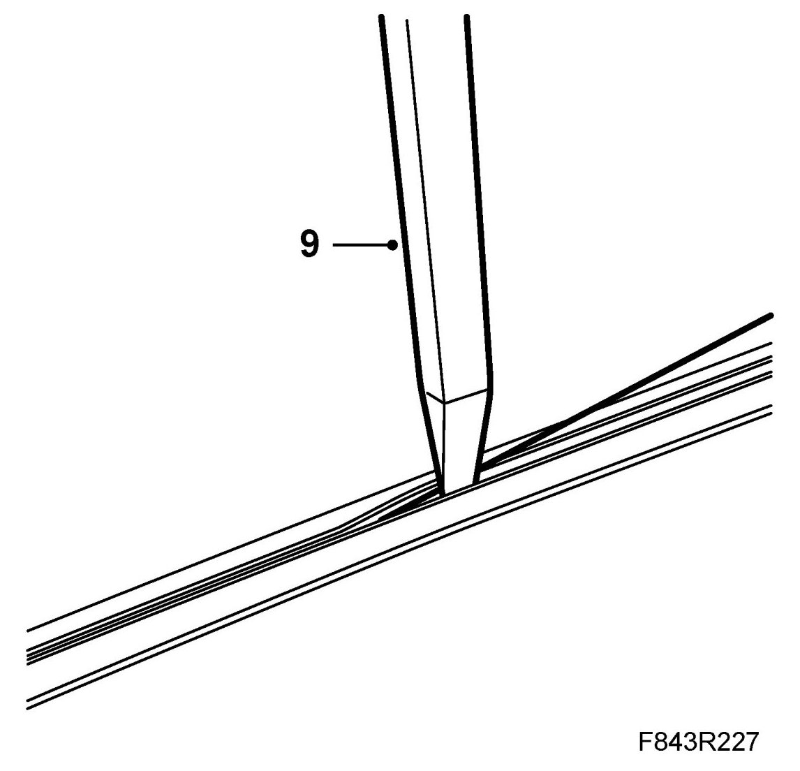
10. Pull the awl back through the adhesive into the cabin. Pull through roughly 0.4 m of wire.
11. Unhook the cutting wires from the screwdriver. Straighten the ends of the wire to an obtuse angle. Remove the screwdriver from the car.
12. Fit the coiler to the inside of the window.
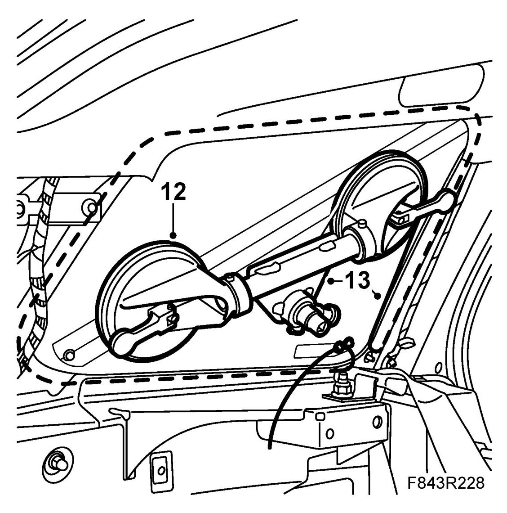
13. Attach the ends of the wire to the wire coiler. Make sure that the wires do not cross. Use the groove in the wire coiler's suction cups to achieve a suitable angle.
14. Use a ratchet handle to wind the wire coiler so that the wire cuts through the bead of adhesive. If necessary, use the protective tool with suction cup between the cutting wire and metal to prevent the wire cutting against the metal or headlining. Move the wire coiler successively to maintain a suitable angle. An acute angle cuts better. If there is a risk of the wire breaking, stop winding for 10-15 seconds to allow the wire time to work through the adhesive.
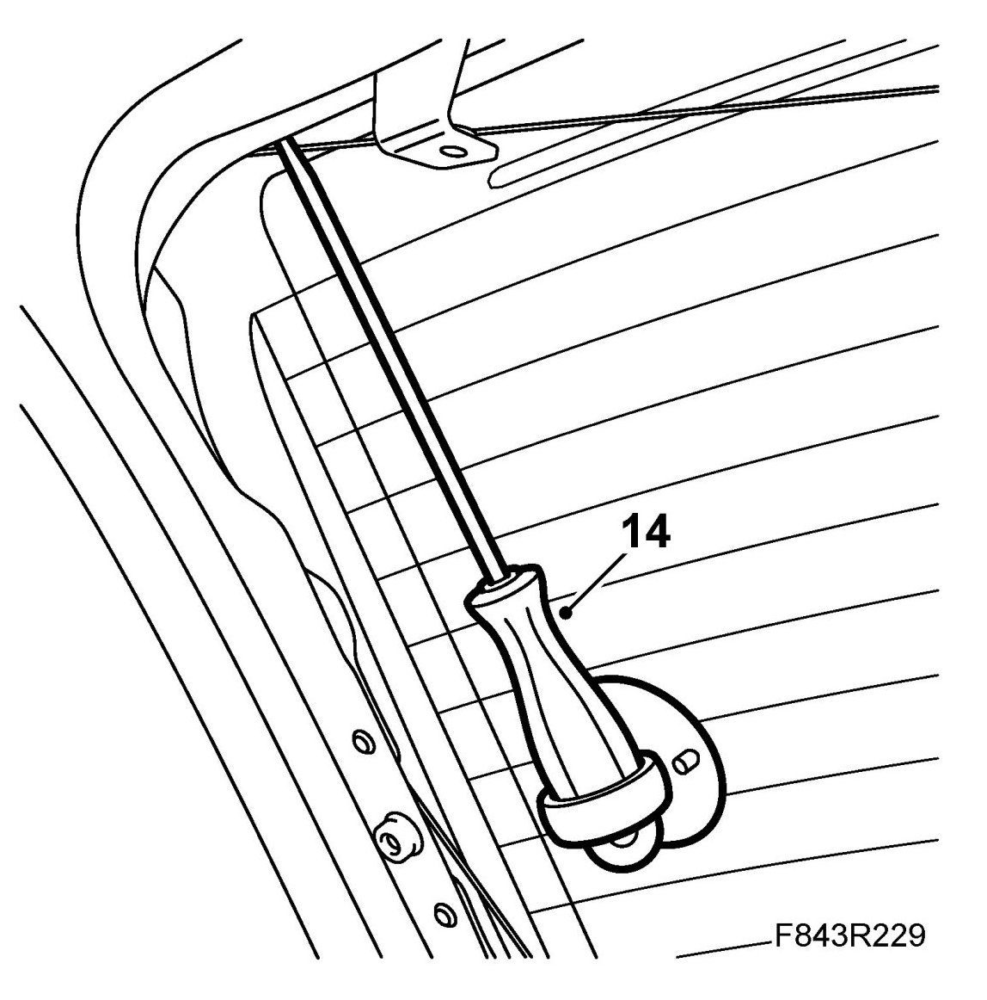
15. Lift off the window.
To fit
IMPORTANT: Betaseal X 2500 cures in 1 hour at 23 degrees C and 50% relative humidity. To avoid the glass from coming loose or its position changing during the curing time, the car must not be subjected to jolts or blows. The doors, tailgate and bonnet must not be shut. The car must not be rocked or rolled. Neither must the glass be pressed in while the adhesive is curing.
Use 32 025 039 Adhesive kit, window glass for bonding windows. To avoid mixing up the cleaner and primer, the tubes are different colours:
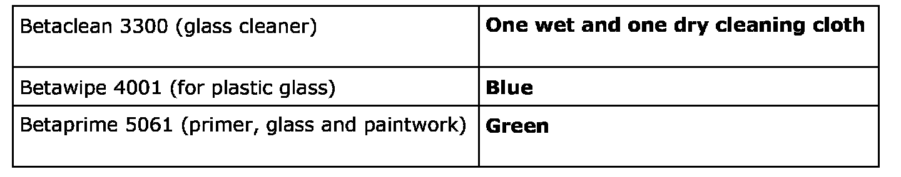
The car must be standing on all four wheels on a level surface when the window is fitted in place. To ensure the best possible results, it is extremely important for all surfaces that have been cleaned or primed to be kept free from dust and dirt while work is in progress. The same goes for the adhesive when it has been applied. Once work has been started it should therefore be continued without interruption until the window has been fitted and the adhesive hardened. The adhesive begins to harden as soon as the contents of both tubes are mixed. The window must therefore be fitted into place within 5 minutes from the time that application of the bead of adhesive was first begun. Note that points 7-14 must without exception be carried out in the given order to ensure satisfactory results with maximum adhesion.
1. Cut down the bead of adhesive on the tailgate to a maximum height of 2 mm. Use the cutting tool provided in the removal kit. If the old window is to be refitted, the bead of adhesive on this must also be cut down to max. 2 mm. Old and firmly adhered adhesive gives a good base for the new adhesive. Loose adhesive on the glass or metal must be removed.
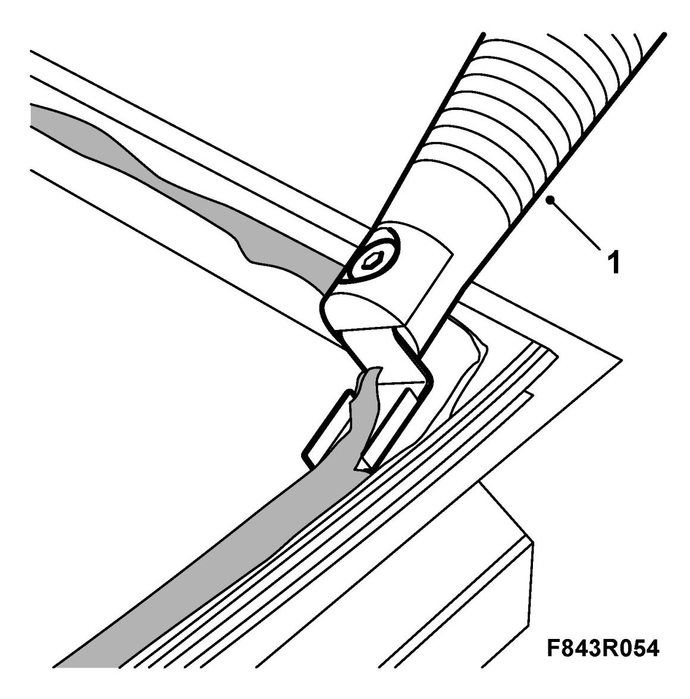
2. Remove loose particles, dirt and residue from plastic strip on the metal flange with a vacuum cleaner.
3. Repair any damage to the paintwork.
- Scrape off any loose flakes of paint with a knife.
- Clean with Terosan Cleaner FL.
- Apply primer. Use Standox 1K Fullprimer.
- Apply the finish coat.
IMPORTANT: The paintwork must be flawless to prevent the onset of corrosion. In addition, an imperfect paintwork repair could result in the layers of paint separating under the bead of adhesive.
4. If there is no old adhesive, or if the adhesive is not intact, primer must be applied to the surfaces with which the adhesive will be in contact. Use Betaprime 5061 (green) on any touched-up surfaces. Do not use body primer on old, wellcohered adhesive.
5. Transfer the window moulding to the new window where appropriate.
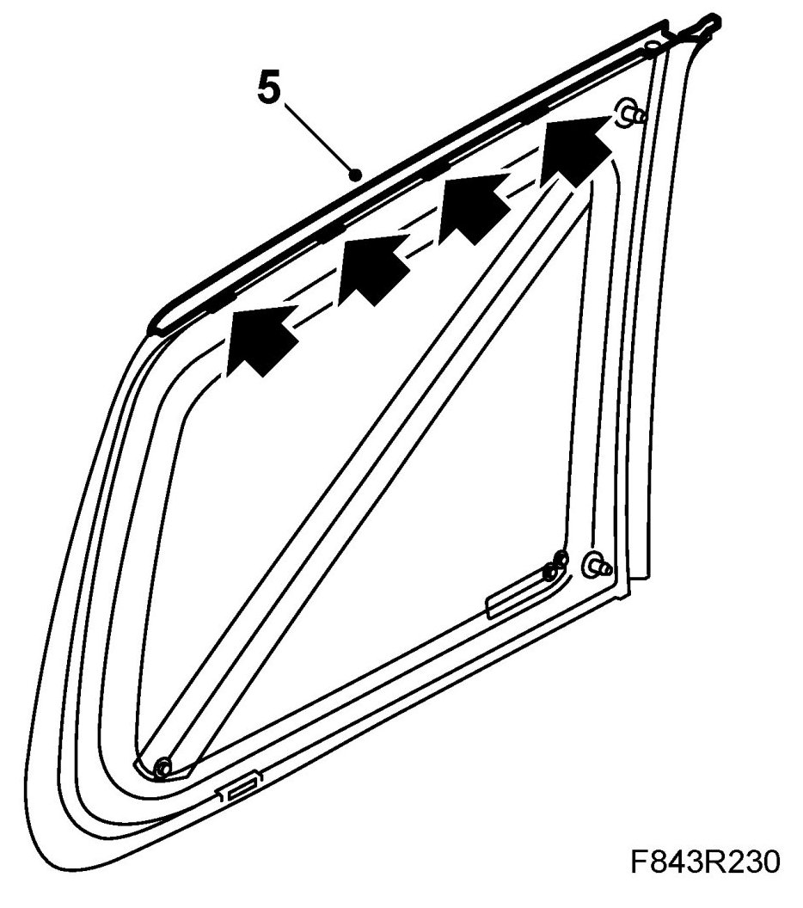
6. Fit the lifting handle to the outside of the side window and place the window inside up on a workstand.
7. Carefully wash the edges of the window with Betaclean 3300. Carefully wipe the edges using the wet cleaning cloth. Dry with the dry cleaning cloth provided in the adhesive kit. Avoid touching the cleaned surface.
IMPORTANT: Do not allow the cleaning agent to dry naturally as it may leave traces of grease on the glass. Always dry with clean, lint-free rags and refold them frequently.
8. Apply Betaprime 5061 (green cap) to the cleaned surface. Allow the primer to dry for 10 minutes.
9. Avoid touching the primed surface.
NOTE: If the side window is to be held in place with adhesive tape after fitting, make sure the side window/side panel is washed before starting to glue the window.
10. Apply the adhesive as follows:
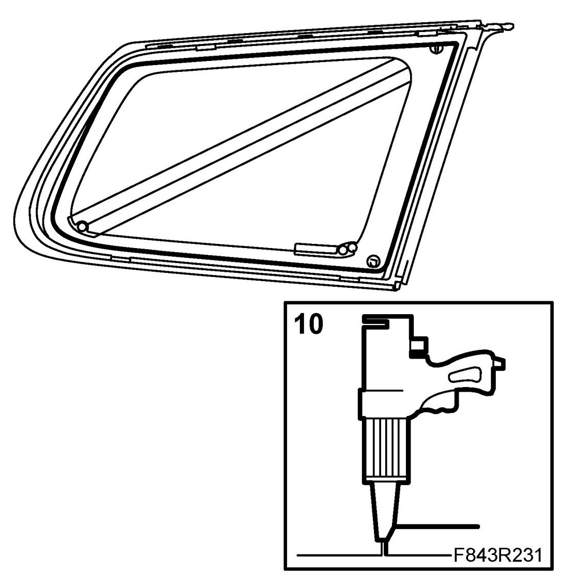
- Cut off the tip of the glue cartridge nozzle to obtain a suitable shape.
- Hold the gun at right-angles to the window and apply a bead of adhesive to the primed surface. Start along the front edge of the window. Make sure that there are no breaks in the adhesive bead.
11. Put in place the new window.
12. Adjust the window and check its fit. Adjust as necessary.
13. Secure the window with tape or straps so that it is held in position.
14. Allow the adhesive to cure before continuing. Betaseal X 2500 cures in 1 hour at 23 degrees C and 50% relative humidity.
15. Fit the front moulding. Change clips if necessary.
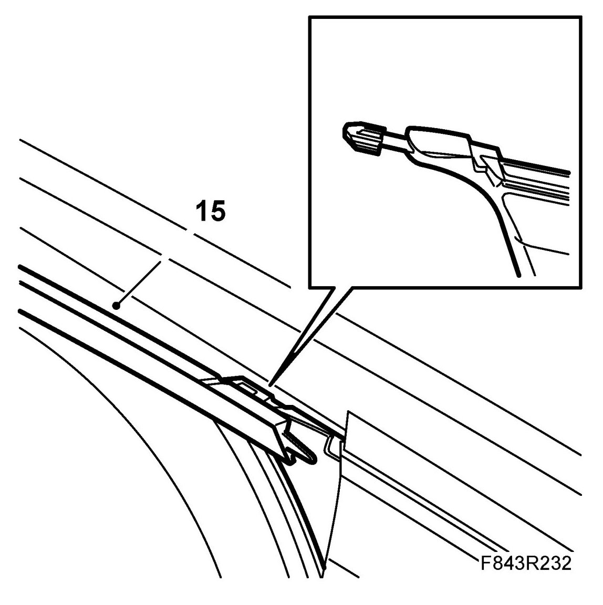
16. Fit Rear side trim, 5D.
17. Clean the windscreen inside and out.